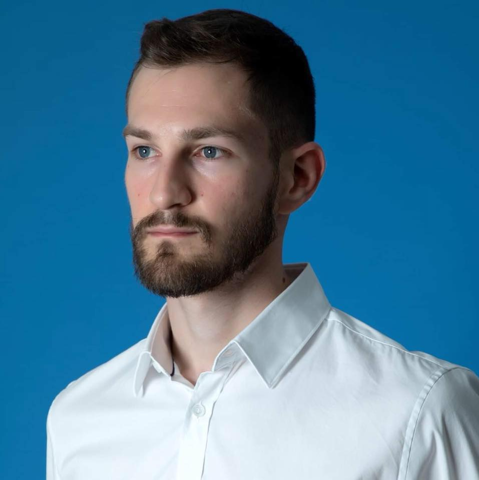

φ
Inflation & Initial Conditions
Plateau inflation, suppressed primordial tensors, reheating and dynamical preparation of inflationary initial conditions.

National Technical University of Athens (NTUA) & National Observatory of Athens (NOA), Greece
I work on inflation, quantum cosmology, modified gravity, black-hole physics and cosmological tensions, with an emphasis on connecting fundamental gravitational dynamics to falsifiable cosmological and strong-gravity signatures.
My research spans early-Universe dynamics and inflation, quantum cosmology, primordial black holes, geometric extensions of gravity, black-hole lensing and quasinormal modes, and model-independent tests of cosmological tensions.
Across these themes, the common goal is to move from analytical gravitational dynamics to signatures that can be confronted with cosmological or strong-field observations.
Plateau inflation, suppressed primordial tensors, reheating and dynamical preparation of inflationary initial conditions.
Wheeler–DeWitt dynamics, cosmological wave functions and Bohmian trajectories in minisuperspace.
Early-Universe mechanisms that alter collapse thresholds, horizon-mass mapping and PBH phenomenology.
Weyl-geometric constructions, teleparallel cosmology and geometric extensions of gravitational dynamics.
Black-hole lensing, geodesic instability and quasinormal-mode decay as observable probes of compact-object environments.
Expansion-history tests and dynamical dark-energy scenarios connected with the H₀, S₈ and evolving-dark-energy tensions.
Developed a ghost-free Weyl-geometric modified-gravity construction with second-order field equations and cosmological applications.
Built inflationary models with strongly suppressed primordial tensor amplitudes while retaining viable slow-roll dynamics and reheating.
Connected cosmological wave functions and Bohmian trajectories to cosmological expansion and investigated their role in inflationary dynamics.
Studied black-hole lensing, near-horizon geodesic instability and anomalous quasinormal-mode decay, alongside early-Universe PBH signatures.
Thesis: Investigating gravity in light of modern cosmological tensions.
Thesis: Weyl Geometries and Holographic Renormalization in AlAdS Manifolds. Grade: 10/10.
Track: Theoretical Mathematics.
Scientific computing, symbolic and numerical modelling, finite-difference methods and scientific typesetting.
Ad hoc referee for Physics of the Dark Universe, Physics Letters B, Nuclear Physics B and Journal of Modern Physics.
Contributor to the CosmoVerse White Paper on observational tensions in cosmology, published in Physics of the Dark Universe.
Teaching in mathematics and physics, including relativity and cosmology, plus lectures and seminars for advanced and gifted audiences.
Mensa International member; lectures include “Proof of planets’ elliptic orbit” and “Cosmology: The Art of Understanding the Whole.”
Research activity spanning NTUA and the National Observatory of Athens across cosmology, gravitation and black-hole physics.
Analytical model building connected to falsifiable cosmological or strong-gravity signatures.
For academic correspondence, research discussions or seminar invitations, contact me via the address below.